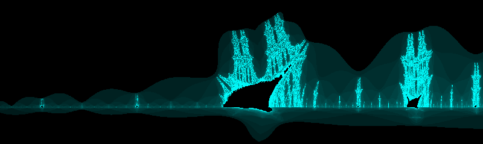

What is it?
HTML 5 Fractal Playground uses the power of the scripting engine in your web browser to allow you to view and explore beautiful
fractal images. You don't have to install anything; simply click the [Launch] button above.
Run it anywhere you have access
to a modern web browser and you can make fractal images like this classic Mandelbrot Fractal:

What's a fractal?
Fractals are images that contain a literally infinite amount of detail. They were made famous by Benoit Mandelbrot
who discovered the eponymous Mandelbrot Set (shown above) in 1979. Mandelbrot showed that a plot of the Mandelbrot set
in the complex plane is infinitely detailed; no matter how much you "zoom in" on the image, there are no smooth or straight edges. As a matter of fact, the Mandelbrot Set
contains many "copies" of itself! Mandelbrot defined his Mandelbrot set
in terms of a simple mathematical "iterating function", but the amazing thing is that there are infinitely many different "iterating functions" that generate fractals.
Mandelbrot remarked that the math is so simple that all you have to do is add and multiply; you just have to do it billions of times!

Why should I care?
That the images are beautiful is the primary reason! The secondary reason is that if you really study fractals, it's downright mind-bending!
Artists have used fractal images for inspiration. For instance, the graph above is known as "The Burning Ships Fractal".
Of course, in the real world, there can be no such thing as a true fractal because as far as we know,
the universe is composed of indivisible particles. In spite of this, fractal patterns have inspired ideas about how the universe works, how to design
new technologies, and more.

I clicked [Launch] and see a graph. Now what?
When you first click [Launch], the system will estimate the number of cores in your CPU; this is to optimize performance, but don't worry if it isn't right.
Then, you'll see an image of the Mandelbrot Set. From here, you can do one of several things.
- You can save a copy of the currently drawn graph by clicking the [Save] button.
- You can use your mouse or touch-screen to select a region of the graph and click the [Draw] button to zoom in. Click the [Reset Plot Location] button at any time to return to the original graph.
- You can select a different fractal from the picklist at the top. Each one of these uses different mathematical equations.
- If you are a power user, you can drill into the advanced options by clicking [Options] where you can enter a custom mathematical function, change the colors, and the size of the image generated.
A custom mathematical function? What's that?
This is an option for power users; you can draw many beautiful graphs without ever using this feature. Click [Options] and then [Custom Function].
In the "Iterating Function" input, type in a function of two variables: z and c.
HTML5 Fractal Playground provides many functions that can be used to define the iterating function.
It provides the operators +, -, *, /, and ^. In addition to the operators, the following functions are provided:
real: real number representing the real part of a complex number
imag: real number representing the imaginary part of a complex number
conj: the complex conjugate of a number
arg: the complex argument
sin: sine
cos: cosine
sh: hyperbolic sine
ch: hyperbolic cosine
exp: natural exponential
ln: natural log
Expanding the supported functions is in my plans for a future release.